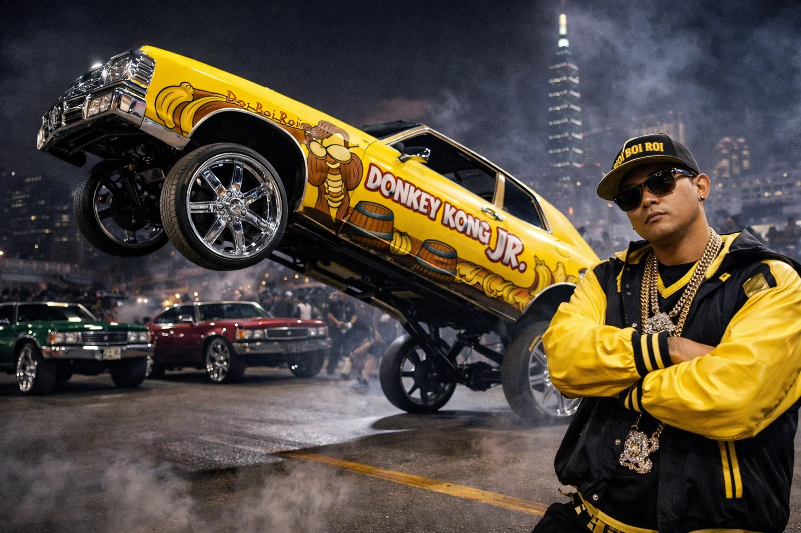
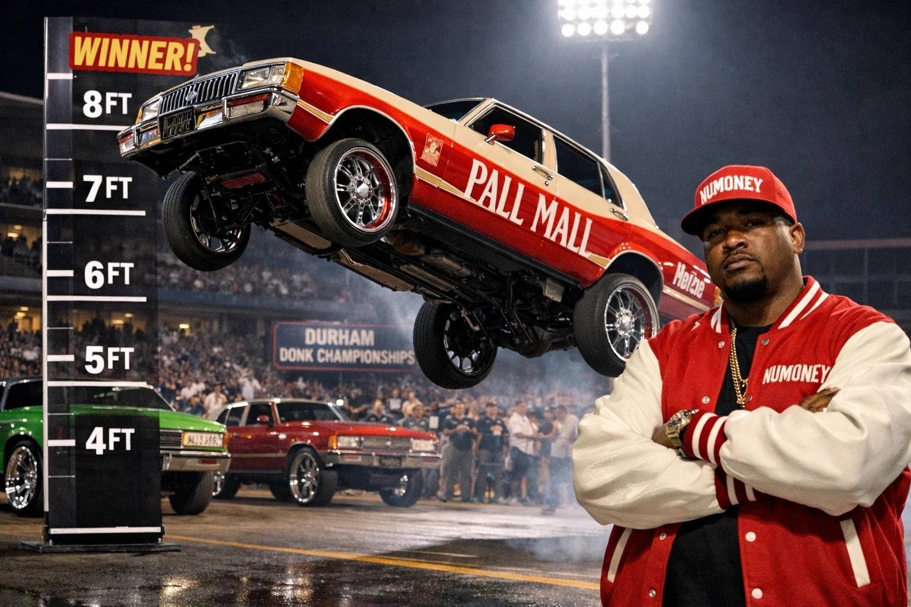
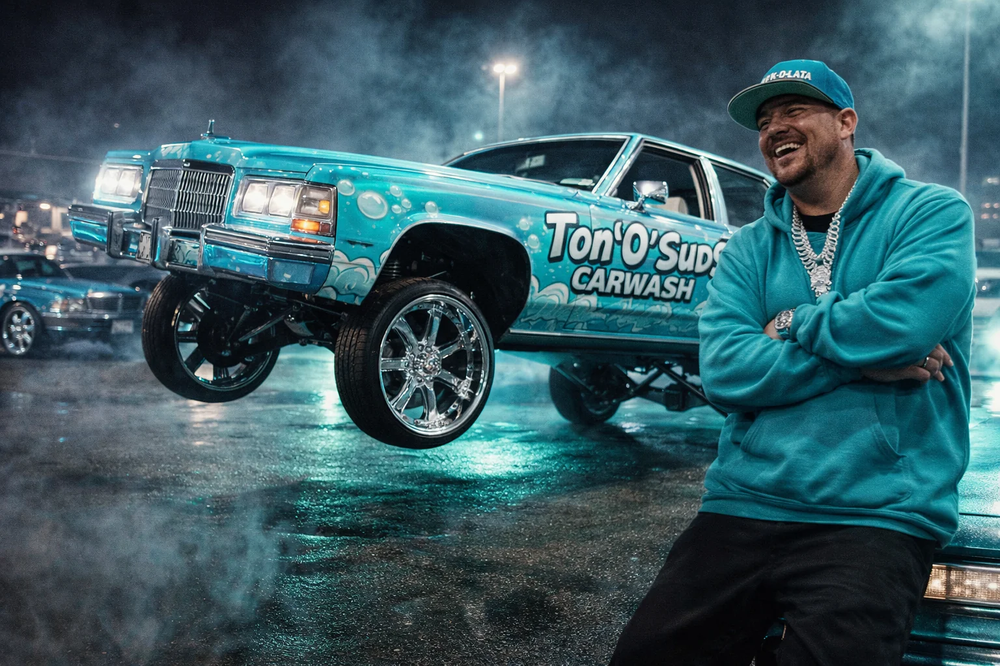
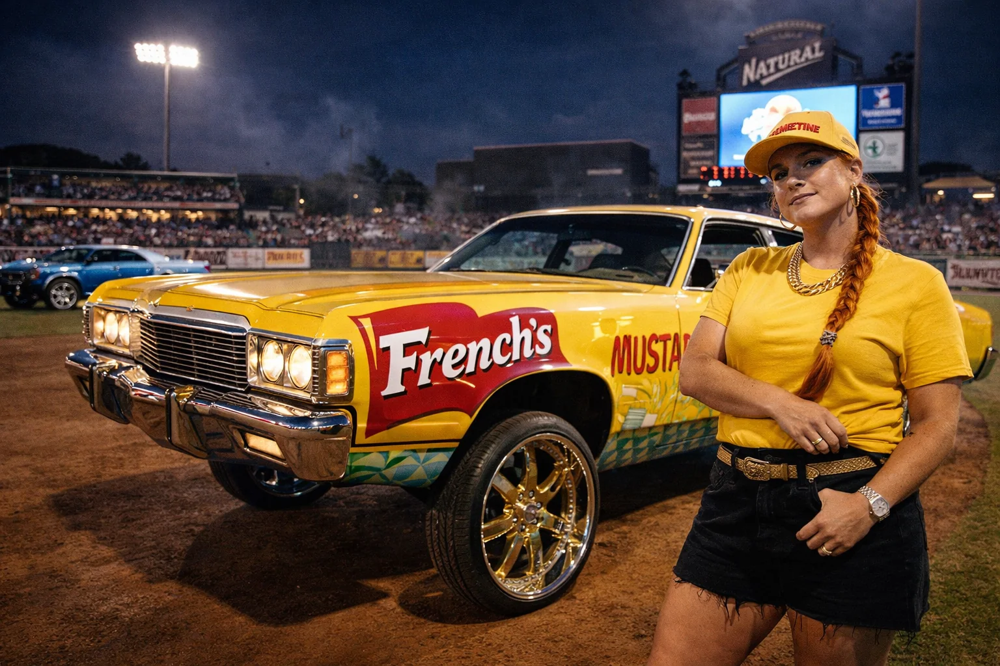
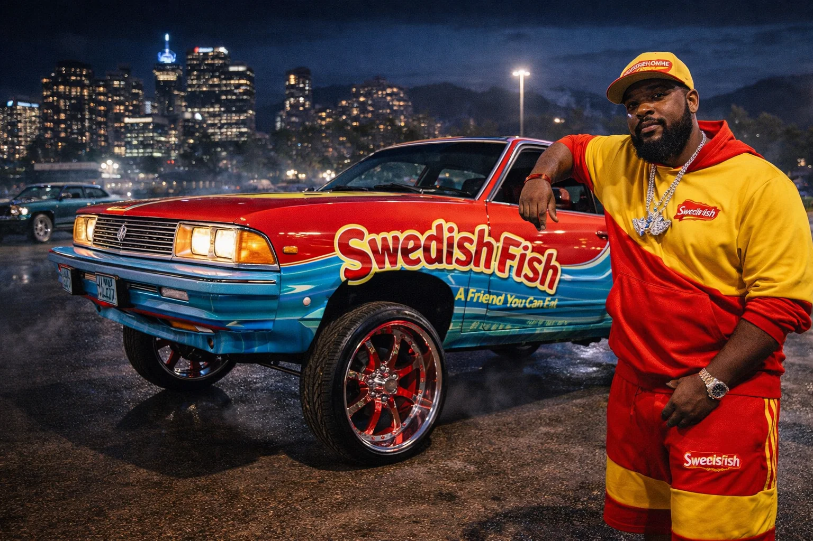
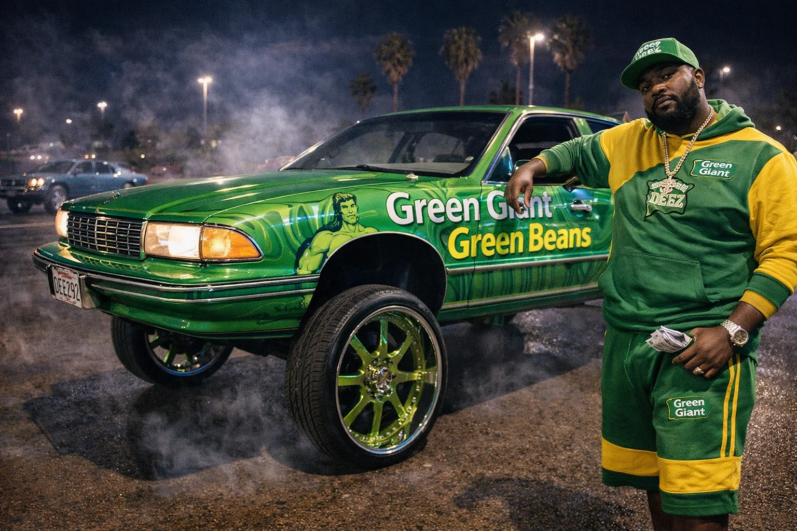
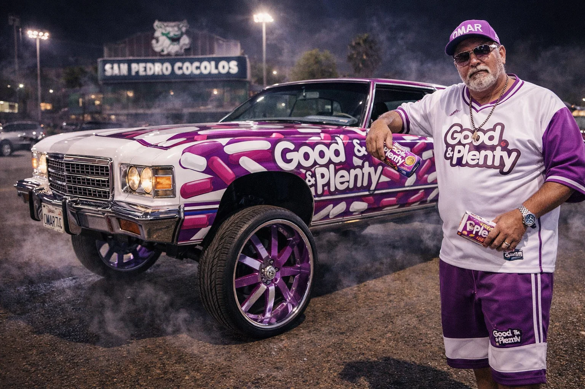

QF1 · FINAL
Toi Boi Roi ADVANCES95.6
Omar Azul94.4
Read the run
Roi holds the Tripod Lean through the full count; Omar’s coastal build finishes just behind on control.
Eight city champions. One final in Tijuana. Taipei’s Toi Boi Roi takes the 2026 DONK Championship.
FINAL · NOVEMBER 12, 2026 · TIJUANA, MEXICO
See the championship results ↓
NuMONEY goes highest. Toi Boi Roi puts together the winning run.
The final comes down to two very different builds: Durham’s candy-red Caprice and Taipei’s banana-yellow Impala. NuMONEY owns the height lane, but Roi settles into the Tripod Lean, holds it through the judging count and brings the car back down without breaking its composure.
The judges give Roi the edge in control and overall build identity. His 97.2 beats NuMONEY’s 96.4. NuMONEY leaves with the height title; Roi leaves Tijuana as the 2026 DONK champion.
Judged totals · out of 100
| Driver | Build & finish/ 30 | Control/ 30 | Identity/ 25 | Showmanship/ 15 | Total |
|---|---|---|---|---|---|
| Toi Boi Roi | 29.4 | 29.5 | 24.4 | 13.9 | 97.2 |
| NuMONEY | 29.5 | 28.7 | 24.0 | 14.2 | 96.4 |
Eight drivers. Single elimination. Each head-to-head run is judged on build and finish, control, identity and showmanship. The higher total advances; scores reset each round.
November 10, 2026
Roi holds the Tripod Lean through the full count; Omar’s coastal build finishes just behind on control.
Big Rell’s slow lift and chrome-forward finish edge the red-and-aqua Citation.
The Durham champion makes the height lane his own. Daryl’s Green Giant theme earns a long response from the crowd.
The closest quarterfinal: Clementine’s Fury III wins on finish and a cleaner closing presentation.
November 11, 2026
Roi lands his best controlled sequence of the circuit. Big Rell’s deliberate lift keeps it close until the final marks.
NuMONEY advances behind the night’s strongest height run. Clementine leaves as a semifinalist with the crowd still calling for the mustard-yellow Fury.
November 12, 2026
NuMONEY wins the height lane. Roi takes the overall title with a steadier held angle, cleaner recovery and a complete build presentation.

Runner-up · Height title
Caprice Classic
Candy red / cream drip • Pall Mall theme
NuMONEY’s Caprice cleared the Durham mark under the lights and became the defining image of the circuit’s opening stop.
2026 DONK Champion
Impala
Banana yellow candy drip • Arcade jungle theme
Toi Boi Roi earned Best Style honors with a controlled tripod lean, chrome-heavy finish, and a nightlife build that owned the Taipei stop.
Semifinalist
1974 Caprice Classic
Deep candy burgundy • Chrome-forward Southern build
Big Rell brought the most restrained and intimidating build of the circuit, winning Atlanta on presence, stance, and total authority.

Quarterfinalist
1985 Cadillac
Aqua / teal candy drip • Ton O’ Suds Carwash theme
The Albuquerque field belonged to Perk-O-Lata, whose glossy wash-cycle build turned a full concept into one of the circuit’s strongest identities.

Semifinalist
1972 Plymouth Fury III
French’s Mustard theme • Ballpark condiment build
Clementine Latham stood out in the Naturals’ ballpark setting with a bold, playful build that still felt fully serious in execution.

Quarterfinalist
1980 Chevy Citation
Swedish Fish theme • Red and aqua city-night finish
Bonnehomme’s Citation gave Vancouver one of the circuit’s sharpest color stories, landing Best Style with a clean and playful build.

Quarterfinalist
1992 Chevy Caprice
Green Giant Green Beans theme • Heavy green field build
Veteran builder Daryl Deez brought full commitment to Fresno with a Green Giant Caprice that dominated on theme, tone, and crowd response.

Quarterfinalist
1974 Chevy Caprice
Good & Plenty theme • Purple and white coastal finish
Omar Azul closed the field with a younger, composed build that gave San Pedro one of the circuit’s cleanest and most controlled statements.
Plaza showcases, live judging and a seventh-inning salute. Each stop crowns a city champion and sends one driver toward the final in Tijuana.